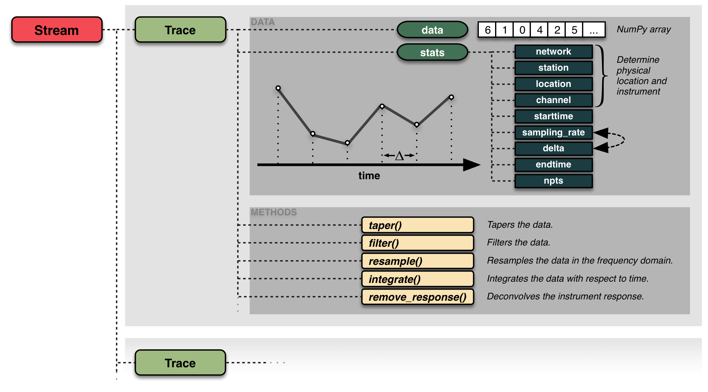

ObsPy解説記事 [01]: 基本・地震波形のダウンロード
ObsPy
は地震波形解析などを行うPythonパッケージである1．
地震カタログや波形データのダウンロードから基本処理，スペクトル解析，描画など，多様な処理をPythonフレームワークで実現できる．
第01回では，ObsPyの基本と波形の表示やダウンロード方法を示したい．一覧は
こちら
．
ObsPyとは?
地震学データを扱うためのオープンソースプロジェクト． 多種の信号処理ルーチンによる時系列解析が可能な上， 複数のフォーマットファイルの読み書きに対応し， データセンターへのアクセスもできる．
今回は， Tutorial の内容を主に紹介する
ObsPyホームページ : https://docs.obspy.org/- Documentation Contents : https://docs.obspy.org/contents.html
- Library Reference : https://docs.obspy.org/packages/index.html
YouTubeに ObsPyの公式解説動画（約1時間） が公開されているが，最新の情報ではないことに注意
ObsPyのインストール
⇒ conda環境が好ましい2
conda-forgeチャンネルからインストール(base)$ conda activate <env> python=3.10 ... # <env>は任意の仮想環境名 (env)$ conda install -c conda-forge obspyNOTE既に
mambaをbase環境にインストールしている場合はcondaを置き換え可能
ObsPyのインポート
obspy:obという省略名を与える場合が多い## Good import obspy as ob from obspy.clients.fdsn import Client## Possible import obspy## AVOID THIS! from obspy import *- 次のパッケージも読み込んでおく
numpy: C言語で書かれた高速計算パッケージmatplotlib.pyplot: 図作成モジュールpandas: データ解析に有用なデータ構造を提供
波形データの格納構造
ObsPyでは1成分の地震波形データを Trace オブジェクトに格納する．
Traceオブジェクトは複数の属性を持つ.data:ndarray形式で格納された波形データにアクセスできる.stats: 波形データのヘッダー情報などを含むdict構造- その他多種多様なメソッド
複数のTraceは Stream オブジェクトに集約できる
図で表すと以下の通り：

Reference: https://docs.obspy.org/packages/obspy.core.htmlまた，StreamオブジェクトにもTraceと同様のメソッドが用意されており，
Streamのメソッドを適用することで，一括で全てのTraceに変更を加えられる．
ObsPyにおける波形データの取り扱い
地震波形の読み込み
基本的に
obspy.read()
関数を
用いて地震波形データを読み込み，Streamオブジェクトを作成する．
ObsPyが提供する波形サンプルを読み込んでみよう．
st = ob.read('http://examples.obspy.org/RJOB_061005_072159.ehz.new')
print(st)
print('\nNumber of traces: ', len(st))SAC形式のファイルも，formatを指定することで読み取れる
ob.read("/path/to/file.sac", format="SAC")複数ファイルを読み込む場合は文字列中にアスタリスク'*'を含むことができる．
詳しくは，
obspy.io.sac
などを参照
Streamの情報はprint()などで表示できる．
print()関数:Stream内に含まれるTraceの情報を参照print(st)len()関数:Stream内のTrace数print('\nNumber of traces: ', len(st))st[i]はi+1番目のTracetr = st[0] print(tr)
ヘッダー情報は属性.statsで参照
-
Beyreuther, M., Barsch, R., Krischer, L., Megies, T., Behr, Y., and Wassermann, J. (2010), ObsPy: A Python Toolbox for Seismology, Seismological Research Letters, 81 (3), 530-533. https://doi.org/10.1785/gssrl.81.3.530 ↩︎